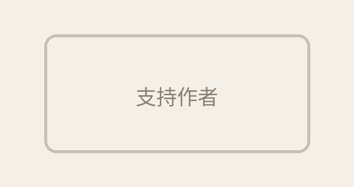

关 于
一个本地优先的块式笔记与文档编辑器
所有功能免费使用
文档默认保存在本机
源代码以 MIT 许可证开源，完整文本见 LICENSE
软件内置思源黑体、霞鹜文楷、MiSans
均允许商业使用
（字体许可证随字体文件附带）
应用图标基于上善无形、ZipZipPipe 的原作修改
依 CC BY-NC-SA 4.0 授权，仅限非商业用途
—— 软件作者：续止
作者专属标识仅用于官方发布，不包含在源代码仓库中，
也不属于源代码的 MIT 许可范围。
版权所有 © 2026 续止
———— 支持作者 ————
如果这个软件您觉得很不错，可以通过官方安装包中的方式支持作者
感谢支持
（自愿原则，金额随意，不影响任何功能使用）
